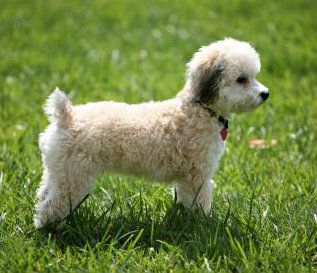
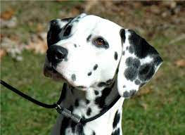
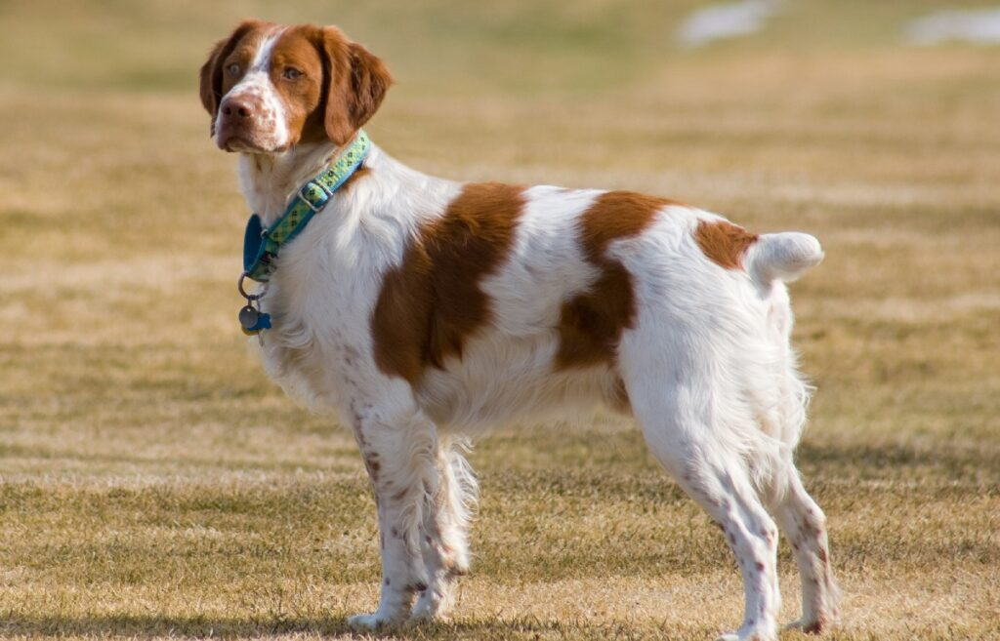
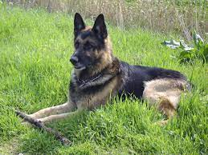
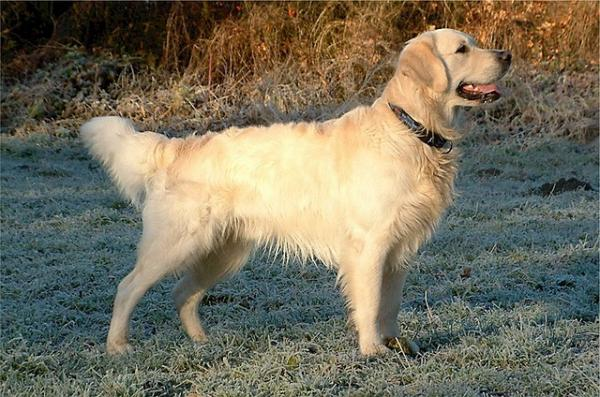

Las razas pequeñas incluyen pomeranias, chihuahuas y bichón frisé.
Qui sequi neque quasi vel nihil quis vel nemo expedita placeat dignissimos eos suscipit praesentium assumenda et dolore alias quam et aliquam nemo tenetur aperiam autem reiciendis optio dicta perferendis vitae quasi maiores dolores eum fugit vel ab distinctio esse autem at et porro voluptatem fugiat sed qui praesentium recusandae.Sapiente sed ipsa et ex delectus perspiciatis ab dolores voluptate saepe rerum vitae dignissimos non quia voluptas aspernatur ipsa saepe ratione ipsum est voluptas aut necessitatibus quis minus aspernatur ea dolorem velit amet hic velit sit aut accusamus natus sed ut ea officiis optio sit exercitationem iusto necessitatibus consequuntur veritatis.
Las razas medianas incluyen beagles, cocker spaniels y dálmatas.
Qui sequi neque quasi vel nihil quis vel nemo expedita placeat dignissimos eos suscipit praesentium assumenda et dolore alias quam et aliquam nemo tenetur aperiam autem reiciendis optio dicta perferendis vitae quasi maiores dolores eum fugit vel ab distinctio esse autem at et porro voluptatem fugiat sed qui praesentium recusandae.Sapiente sed ipsa et ex delectus perspiciatis ab dolores voluptate saepe rerum vitae dignissimos non quia voluptas aspernatur ipsa saepe ratione ipsum est voluptas aut necessitatibus quis minus aspernatur ea dolorem velit amet hic velit sit aut accusamus natus sed ut ea officiis optio sit exercitationem iusto necessitatibus consequuntur veritatis.
 Las razas grandes incluyen labradores, pastores alemanes y golden retrievers.
Qui sequi neque quasi vel nihil quis vel nemo expedita placeat dignissimos eos suscipit praesentium assumenda et dolore alias quam et aliquam nemo tenetur aperiam autem reiciendis optio dicta perferendis vitae quasi maiores dolores eum fugit vel ab distinctio esse autem at et porro voluptatem fugiat sed qui praesentium recusandae.Sapiente sed ipsa et ex delectus perspiciatis ab dolores voluptate saepe rerum vitae dignissimos non quia voluptas aspernatur ipsa saepe ratione ipsum est voluptas aut necessitatibus quis minus aspernatur ea dolorem velit amet hic velit sit aut accusamus natus sed ut ea officiis optio sit exercitationem iusto necessitatibus consequuntur veritatis.
 Las razas exóticas incluyen el lebrel afgano, el galgo español y el crestado chino.
Qui sequi neque quasi vel nihil quis vel nemo expedita placeat dignissimos eos suscipit praesentium assumenda et dolore alias quam et aliquam nemo tenetur aperiam autem reiciendis optio dicta perferendis vitae quasi maiores dolores eum fugit vel ab distinctio esse autem at et porro voluptatem fugiat sed qui praesentium recusandae.Sapiente sed ipsa et ex delectus perspiciatis ab dolores voluptate saepe rerum vitae dignissimos non quia voluptas aspernatur ipsa saepe ratione ipsum est voluptas aut necessitatibus quis minus aspernatur ea dolorem velit amet hic velit sit aut accusamus natus sed ut ea officiis optio sit exercitationem iusto necessitatibus consequuntur veritatis.